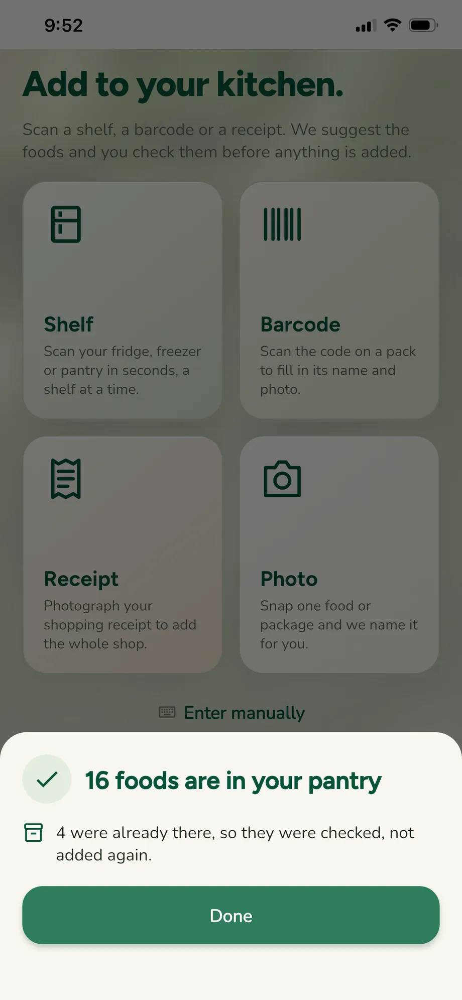
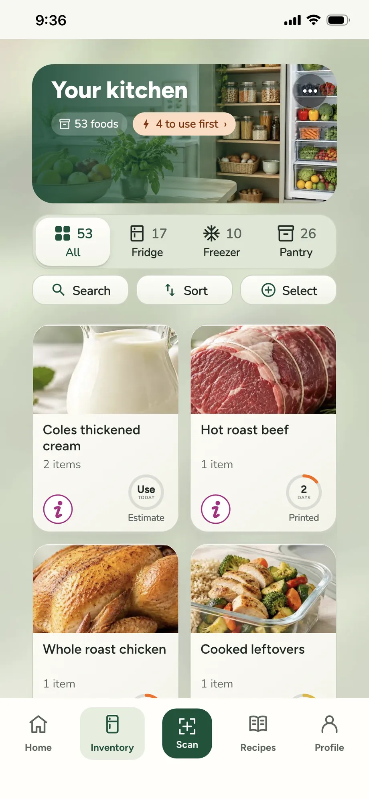
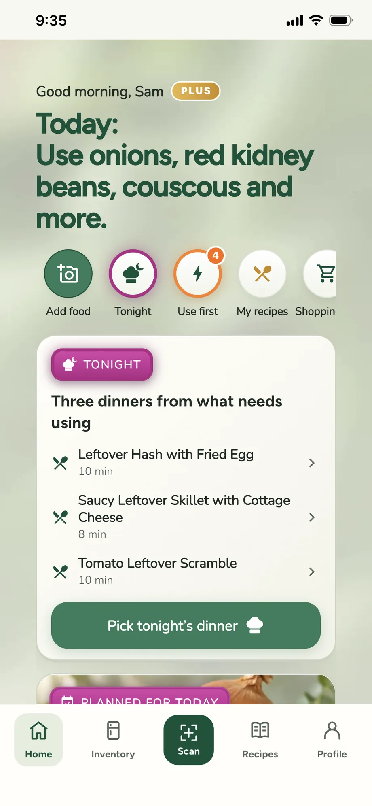
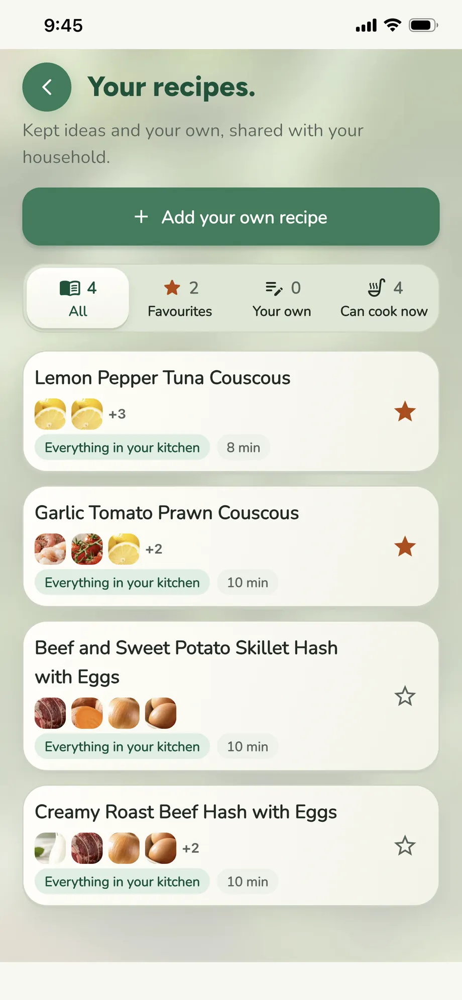
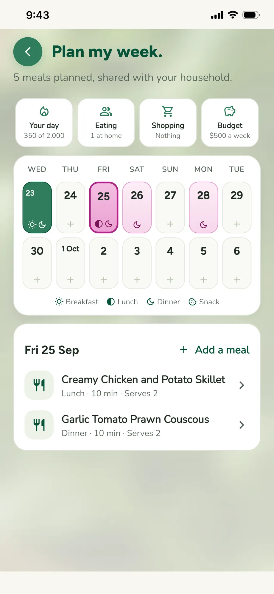
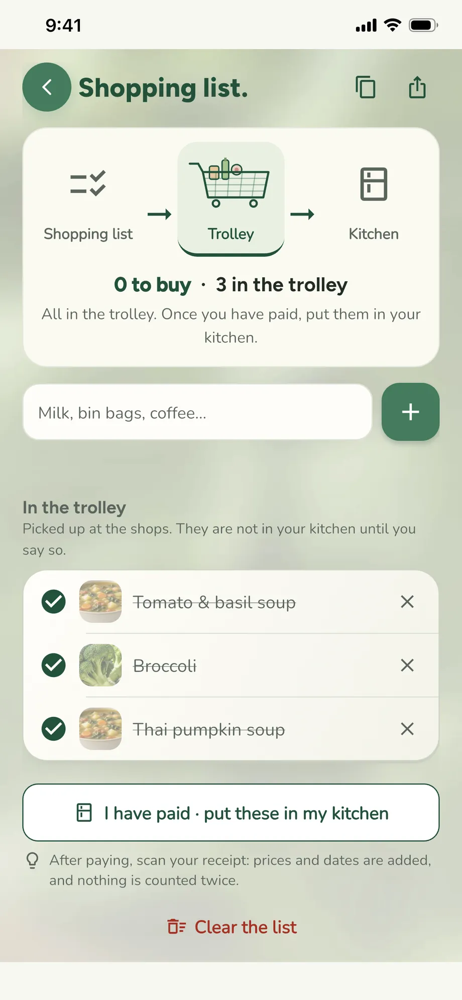
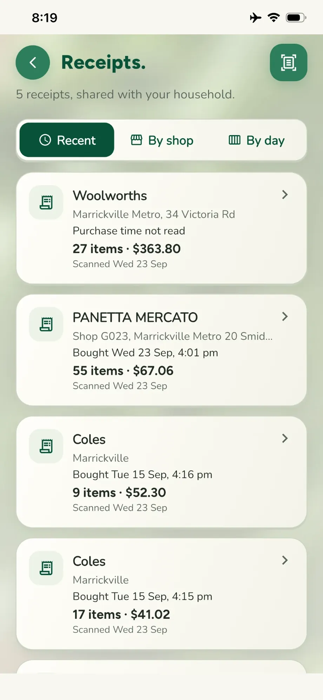
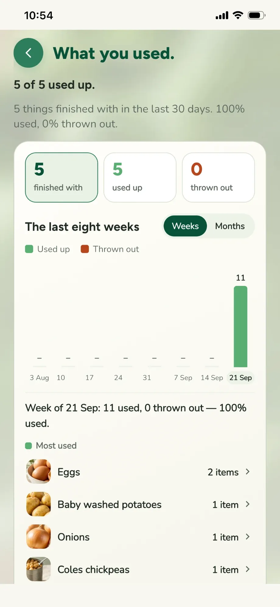

Help and support
Everything Use It Fresh does, and how to do it. Features marked PLUS are part of Use It Fresh Plus; in the app they're gold. Something not working, or an idea for the app? A person answers every email.
We aim to reply within two working days. It helps if you say which phone you have and what you were doing at the time.
In a hurry? In the app, open Profile → Quick guide for a one-minute tour.
Getting started
- Create your account with your email address. If we ask you to confirm it, open the email we send and tap the link; it brings you back to the app. Nothing there? Look in Junk or Spam, or tap Send it again.
- Three short screens show what the app does. Tap Next, Back or Skip; nothing moves on by itself. You can see them again any time in Profile → Quick guide.
- Set up your kitchen in five short steps:
- Your kitchen: start a new one, or join someone else's with their invite code.
- You: what we should call you, and metric or imperial measures.
- Food: allergies and diets, so recipes always leave those out. Optional.
- Places: fridge, freezer and pantry are there already. Tap any other place you keep food (fruit bowl, bread box, garage freezer…) to add it, or type your own. Optional.
- Reminders: whether to be nudged when food needs using, and how many days ahead food should be used first.
- Anything gold in the app is part of Plus.
- When your kitchen is ready, Scan my first shelf or go straight to your kitchen.
Adding food

Scan your kitchen to get started. Scan your shopping to keep it up to date. A new kitchen starts with Fill your kitchen on Home: tap Fridge, Freezer or Pantry and photograph it a shelf at a time. Each place is ticked once it has food in it. After that, scan your receipts as you shop.
Tap Add food on Home, or the scan tab. There are four ways, and you always check what we found before anything is added.
Shelf PLUS
Photograph a whole shelf of the fridge, freezer or pantry. Each food we see is numbered on your photo and listed below it. For each one:
- Tick it to add it, or cross it off if it's wrong. Yes to all (or Yes to the rest) ticks everything left.
- Tap a food to fix its name, amount, where it's kept or its date.
- Anything we had to guess, like how many eggs are in a closed carton, is marked Check me until you confirm it.
- Food you already have in the same place isn't added twice: it's checked, and the amount goes up only if the photo shows more. Nothing is ever taken away because it wasn't in a photo.
- When it's in, a summary says how many foods went in, how many were already there, and how many scans you have left.
Use Add more items at the top to add another shelf, a receipt, a barcode or a single photo to the same review. When you tap Go to my kitchen now, everything ticked is added. If nothing, or not everything, is ticked, we ask first.
Every kitchen's first 3 shelf scans are free, to fill it. After that, Free accounts get 3 shelf or receipt scans a month. A scan only counts once its food goes into your kitchen, so a retake, a blurry photo or a scan you back out of costs nothing.
Receipt PLUS
Photograph your receipt, flat and all in the frame. Each line becomes a food, placed where it's usually kept (milk in the fridge, frozen peas in the freezer), with a place icon you can tap to change. Bags of produce are counted properly: a bag of onions is several onions, not one. The receipt is kept in Receipts with the shop and what you paid; the photo itself is deleted as soon as it's read, because receipts can show part of a card number.
- A long receipt? Photograph it in parts. On the review, tap Add another part and overlap a line or two; anything that appears in both photos is kept once, and the shop, date and total come from whichever part shows them.
- The same thing printed twice becomes one line with two of them, and a food you already have says You have one already, so nothing is doubled by accident.
- With PLUS, anything on your shopping list that the receipt says you bought comes off the list by itself.
- Estimates count from the day on the receipt. If that day is more than 30 days ago, or reads as a date in the future, we count from today instead, so a misread year never makes a new shop look old.
Barcode
Scan a packaged food's barcode. We look it up (with Open Food Facts) and fill in its name and picture.
Photo, or typing it in
Photo: photograph one food and we read its name, where it's kept and any date we can see, then show it to you to tick and add. No form to fill in, and it never uses a scan. Enter manually is there when you'd rather type: name, amount, where it's kept, and the date printed on the pack if there is one. Pick the date on the pack opens a calendar.
Your kitchen
The Inventory tab shows everything you have, as cards.
- Places: the bar along the top filters by place (All, Fridge, Freezer, Pantry and any places you added), with how many foods are in each.
- Groups (by type of food) sit in a row under the places.
- Search, Sort and Select: tap one to open it, tap it again to close it. Sort by Use first (fewest days left first, overdue at the top), Recently added, A–Z or Z–A. Select lets you pick several foods (see Picking several foods).
- Each card shows the food's picture, name and amount, and its date ring. Food planned for a meal carries a tag: For 21/09 when all of it is kept aside for that day, Part for when some is, and the card says how much is still free.
- Live: when someone else in your household adds, uses or moves food, your kitchen updates by itself.
- Same food twice? If the same food is listed more than once in one place, an orange bar offers Combine. You tick which ones really are the same before they're merged, and Undo puts them back. If they're not the same, tap the × on the bar and it won't ask again.
- Empty a place: starting again? The ⋯ on a place's photo empties it. Choose whether that food was used up, thrown out, or just cleared without counting.
A food's shelf
Tap a card and the food slides up as a shelf over the screen. Close it with the red ×, by tapping outside it, or by pulling it down. The round up and down buttons step to the previous and next food in the list you came from.
- The top says where it's kept. The photo shows the food there; the camera button on the photo adds or changes your own picture.
- Quantity, Kept in and Use by are tiles. Tap one to change it in a pop-up: the amount with plus and minus, the place, or the date on a calendar.
- I used it, Cook with it and Plan for later: see Using food. If some of it is planned for a meal, the shelf says Planned 21/09 and how much is kept aside.
- Four tiles in a row: Freeze it moves it to the freezer (tap Frozen to take it back). Add to list puts it on the shopping list. Throw out asks how much. Remove is for food that was added by mistake, such as a wrong scan: it comes off your kitchen without counting as used or thrown out.
- About this food gives general facts such as energy, protein, fibre and salt per serve.
- More info opens how the date was worked out, when it was added, the receipt it came from (tap to open it), and Fix the name or category.
Dates and colours

The ring on every food counts down the days left: green for plenty of time, yellow within your use-soon window, orange for a day or two, red for today or overdue. The word under the ring says where the date came from:
- Printed: the date printed on the pack.
- Estimate: our guess from a typical shelf life for that food in that place. Add the printed date and the guess is replaced.
- No date: nothing printed and no sensible guess; the ring shows a question mark.
Food past its printed date has a red border and a small pulsing red dot, with Overdue under the ring. Use it now, or throw it out. Food past our estimate is never called Overdue: the ring turns orange with a question mark and says Check it, because only you can see how it looks. Add the printed date if you have it. The app never tells you food is safe or spoiled; see honesty.
Using food
A food's shelf has three buttons:
- I used it: eaten or used up. Choose how much, in the way that food is used: eggs and apples by the piece, butter by the tablespoon, milk by the millilitre or cup, a jar by the teaspoon or the whole jar, a tin by the tin or by weight. Using all of it takes it off your kitchen; anything less just lowers the amount.
- Cook with it: find a recipe with it (see Recipes).
- Plan for later: pick a day, a meal and how much (on Free, today; later days are Plus), and it goes in Plan my week. If part of it is planned already, the button says Plan the rest and plans what's left. Nothing leaves your kitchen yet, but that amount is kept aside: other recipes and ideas only use what's left over, and the card shows how much is still free.
When you cook a meal, the app asks how much of each food went in: A little, Half or All, or an exact amount.
Everything you do can be undone: look for Undo at the bottom of the screen. Changed your mind later? What you used lists recent foods with Put it back.
Picking several foods
On Inventory, tap Select above the cards (or press and hold a card), then tap the foods you want. Selected cards get a green border, and a bar appears with:
- Find a recipe: recipes built around those foods. We ask whether to use only what you have, or whether you're happy to buy one or two things.
- Use today: plans a meal for today around them.
- Used up, Move (to another place), Shopping list, and Throw out, each with Undo.
Home

- The greeting shows whether you're on Plus (gold) or Free. Tap FREE to see what Plus adds.
- Shortcuts along the top, each with a count: Add food, Tonight, Use first (orange, with how many, pulsing when something needs using), Clean up (red, when anything is overdue), My recipes (your saved recipes), Shopping list (how many things to buy), Plan week (meals this week) and Receipts. Tonight steps aside once dinner is chosen.
- Use first shows the foods that are due soon; See all lists every one.
- Tonight: a dinner idea for tonight from what needs using (if lunch is your main meal, it's today's lunch until 3 pm). Tap it for the recipe, or to cook it. Pick who's eating (that sets the portions) and who's cooking (one or more; everyone's Home shows it). Eating later? Save me a plate tells the cook to keep your portion.
- Your day PLUS: today's calories and protein from the meals you marked as eaten, against your own targets. Tap it to see the meals, take one off, or set your targets. Private to you, and a guide only, not diet or medical advice.
- Planned for today stands out in magenta: the meal you planned, if there is one.
- Choice of the day: one meal a day built around what needs using. Everyone gets one picked from your household's own recipes, or a nudge to find a recipe for your most urgent food. With PLUS it's picked for you by AI, shaped by what we've learned about your taste, and your whole household sees the same one. Tap it for the steps, I cooked and ate this, or Add to my week.
- Running low on PLUS: foods you finished in the last three weeks and don't have any more, and foods down to their last bit. One tap adds them to the shopping list; See all opens the whole list, ticked, to add in one go.
- The Use first shortcut opens as a shelf: what needs using, all ticked. Untick anything you're not using, then Find a recipe or Plan for today.
- Clean up lists everything overdue, ticked: throw them out or mark them used, with Undo.
Recipes

Meal ideas made from the food you have, with the food that needs using first near the top. They always leave out your allergies and anything on your leave-out list.
- Along the top: Ideas, Saved and Plan week. Under them, one bar with Quick meals, Use my food (only what you have) and Fits my goals PLUS.
- Search builds ideas around one food or a few. Up to 1 to buy (tap again for 2, then 3) allows a little shopping when Use my food is off.
- Filters: meal, time, how many people, and foods to skip this time. Save keeps them; nothing is looked up until you ask.
- Find recipes looks for new ideas with everything you've set. The round button beside it, Start again, clears the search, filters and goals in one tap.
- More possibilities lists ideas using only your food. More, with a little shopping lists ideas that need a thing or two, each marked Missing 2 ingredients; open one to add them to your shopping list.
- On an idea: I cooked and ate this asks how many you cooked for and how much of each food went in, then takes only that off your kitchen. Add to my week plans it. Keep this idea saves it to your household's recipes.
- Your recipes PLUS: kept ideas and your own recipes, with a count on each filter (All, Favourites, Your own, Can cook now), notes and favourites (tap the star).
- Calories and protein are estimates from typical ingredients, never diet or medical advice.
Plan my week PLUS

- A two-week calendar from today. Each day shows its meals as small icons (sun for breakfast, half-moon for lunch, moon for dinner, cookie for snacks). Today is green.
- Tap a day and its meals appear under the calendar, starting with today. Tap an empty day and you go straight to Add a meal, from ideas, your recipes or anything you type.
- Days with meals planned are shaded magenta, so the week reads at a glance.
- Tap a meal to swap it, move it to another day, cook extra portions for leftovers, choose who's eating (with their profile photos), set the Portion size (Small, Regular or Large), or I ate this, which logs it and takes only what went in off your kitchen.
- Above the calendar, four marks: Your day, Eating (who's at home), Shopping (what the plan needs) and Budget (for example A$500 a week, counted against your receipts). Each says what's set, or Not set.
- Your whole household sees and edits the same plan, live: a meal planned or changed on another phone appears on yours.
- If a meal has something someone at the table avoids, it's marked check allergies, or check diets when it goes against a vegetarian, vegan, pescatarian, halal or kosher diet. Open the meal to see who and what. This is a reminder, not a medical check.
- On Free, you can plan today. The calendar and the day picker show later days with a gold lock.
Shopping list

- Shared with your household and live: add something on one phone and it appears on the others.
- Grouped by aisle: fruit and veg, meat, dairy, bakery, pantry, frozen.
- Type several things at once, separated by commas: tea, sugar, pizza becomes three.
- Tick things off as they go in your trolley. Once you've paid, I have paid · put these in my kitchen moves them into your kitchen. With PLUS, scanning the receipt does it for you.
- What you may need opens a shelf of things you used up or threw out lately; tap any to put it on the list.
- Copy and Share sit beside the title, to send the list anywhere.
- When you add things or put the shopping away, the people you live with are told.
Receipts PLUS

Every receipt you scan, with the shop, when you bought it, how many items and the total. Three ways to look:
- Recent: newest first.
- By shop: grouped by shop, whichever branch, with the number of receipts and what you spent there.
- By day: a week of day tiles showing which days you shop, and how often. Tap a day for its receipts.
Open a receipt to see each line, what you paid, and which foods it added. If we couldn't read the total, the receipt says No total; tap it to add what you paid, so your budget stays right.
What you used

- A chart of food used up and thrown out, by week or by month. Tap a bar for the foods in that period, most used first; Show all lists every one, and tap a food to chart only that.
- About … kcal of food used: a rough average from a typical serve of each food, for the foods we have figures for. It isn't what anyone ate, and isn't diet or medical advice.
- The latest foods you used or threw out, each with Put it back in case of a mistake.
Reminders
In Profile → Reminders, turn the reminder on or off, choose how long before a food's date you hear about it (one reminder at 10am), and how many days ahead food counts as Use first (this also sets the colours on the date rings). Tapping a reminder opens Use first. Planned meals remind you on the day PLUS: lunch at 11 am and dinner at 4:30 pm, saying who's cooking and whose plate to save. They follow the plan, including changes made on someone else's phone. If reminders don't arrive, check notifications are allowed for Use It Fresh in your phone's settings.
Your household
- Everyone in a household shares one kitchen, shopping list, plan, recipes and receipts.
- Invite someone: in Profile → Household, share your invite code. They enter it when they set up, or later on the same page.
- Joining another household switches the app to it. You stay a member of your old one and can switch back from the same page.
- The others are told when someone picks tonight's dinner, saves a plate, cooks a meal, plans one, adds to the shopping list, puts the shopping away, or joins your kitchen. Never the person who did it.
- A Free kitchen is for 2 people. One Plus subscription covers up to 6. If a kitchen is full, the person joining is told whom to ask.
Profile and settings
- My details: your name, photo, and metric or imperial units.
- Diet and allergies: always left out of every recipe, including the allergies of everyone in your household. Always check ingredient labels yourself.
- What we've learned PLUS: the tastes the app has learned from the meals you keep, plan, cook and eat, in plain words. Remove anything that isn't right, set the cuisines you enjoy (with their flags), your cooking time, spice from one to three chillies, your main meal (lunch or dinner) and how sweet a tooth you have, or start again.
- Storage: your places, with an icon each. Deleting a place moves its food somewhere you choose.
- Food pictures: which pictures come first: our fresh photographs, your photos, or product photos.
- Your plan, Quick guide and Help are under App. Plus items in the menu are gold.
Free and Plus
The everyday things are free for good: your kitchen, dates and reminders, Use first, allergies and diets, meal ideas, Choice of the day, barcodes and single-food photos, 3 shelf or receipt scans a month, the shared shopping list and What you used.
Anything gold in the app is part of Plus. Less typing. More time for dinner. Use It Fresh Plus adds unlimited shelf and receipt scans, Plan my week, recipes that fit your goals and learn your taste, a Choice of the day picked for you, Running low on, receipts and budgets, and your own recipe collection. It will be A$7.99 a month or A$49.99 a year, with 7 days free on the yearly plan, and covers up to 6 people in your household (a Free kitchen is for 2). You'll buy and cancel it through the App Store; Profile → Your plan shows which plan you're on.
Your data and honesty
- Dates you can trust: the app never invents a use-by date. A guess always says Estimate.
- Never a safety claim: it won't tell you food is safe or spoiled. When in doubt with high-risk food, throw it out and follow local food-safety advice.
- Photos you take are read by Google's Gemini service to see what's in them. Receipt photos are deleted as soon as they're read.
- No ads and no trackers. Nothing about you is sold. Read the privacy policy.
Use It Fresh helps you keep track of food and dates. It cannot tell you whether food is safe to eat, and it never claims to. Use your own judgement, follow the storage advice on the packaging, and when in doubt with high-risk food, throw it out.
When something goes wrong
It says it can't reach my kitchen
That's the connection. The app keeps what it last loaded and tries again when you're back online. If it keeps happening on a good connection, tell us roughly when.
A scan got something wrong
Tap the food in the review to fix it before adding it, or cross it off. After it's added, open the food and tap Quantity, Kept in or Use by, or More info → Fix the name or category. If it shouldn't be there at all, tap Remove.
A food has the wrong picture
Tell us the food's exact name and we'll fix our photo library; it updates without a new version of the app. You can also use the camera button on the food's photo to add your own.
I marked something used by mistake
Tap Undo straight away, or open What you used and tap Put it back on that food.
I forgot my password
On the sign-in screen, tap Forgot password? and enter your email. Open the email we send on your phone and tap Choose a new password; the app opens so you can set a new one. Nothing there? Look in Junk or Spam.
I didn't get the confirmation email
Look in Junk or Spam, then use Send it again on the Check your email screen. Wait a minute between tries.
Is a receipt photo kept?
No. It is read to get the lines and prices, then deleted. Card numbers are never read or stored.
I'm not getting reminders
Check notifications are allowed for Use It Fresh in your phone's settings, and that reminders are on in Profile → Reminders. Open the app once after turning them on so it can set them.
Can I get a copy of my information?
Yes. Email support@useitfresh.com from the address you signed up with and we will send it to you.
How do I delete my account?
In the app: Profile → App → Delete my account. Before anything is deleted it tells you what goes and what stays:
- Your account goes straight away: your sign-in, name, photo, diet and allergies, and what we learned about your taste.
- A kitchen only you are in goes with it: its food, photos, shopping list, plans, recipes and receipts.
- A kitchen you share stays for the others, with everything in it. The person who has been in it longest runs it from then on.
If you pay for Plus, cancel it in the App Store or Google Play as well: deleting your account does not stop a subscription.
No longer have the app? Email support@useitfresh.com from the address you signed up with, and we will delete it for you within 30 days.
Contact us
Anything else, or an idea for the app? Write to support@useitfresh.com and a person will answer, usually within two working days. It helps to say which phone you have and what you were doing at the time.